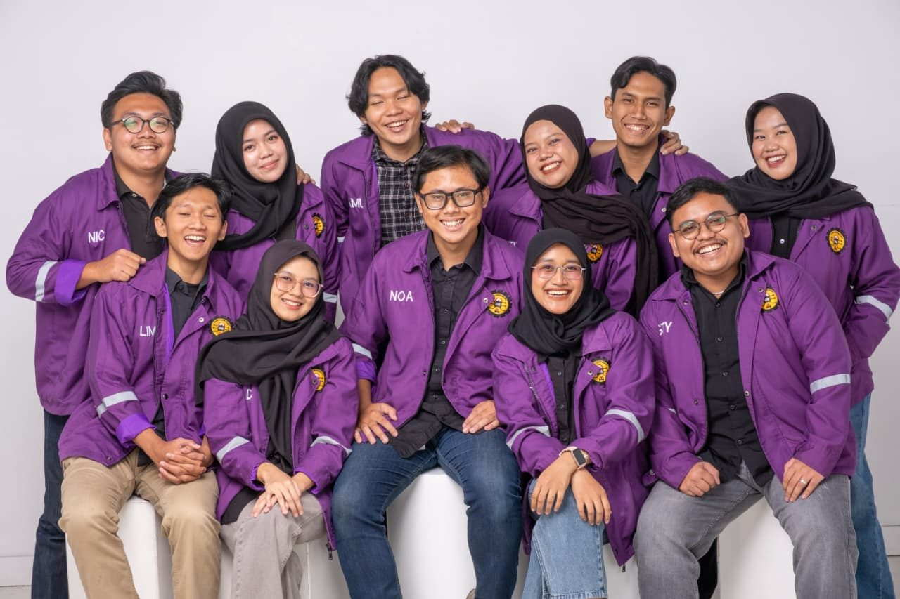
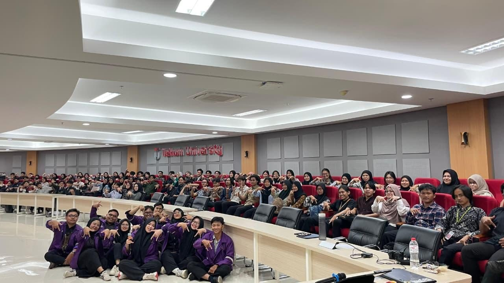
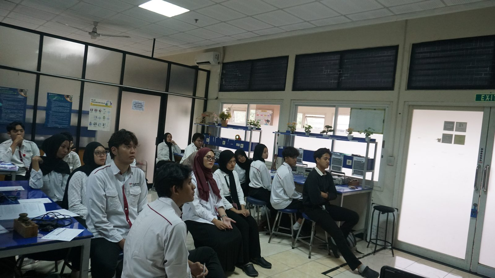

Work Experience
Head of Laboratory Assistants



About MERSI Laboratory
MERSI is an academic laboratory at Telkom University focused on education and research in measurement systems, sensors, instrumentation, signal conditioning, and data acquisition. The laboratory provides hands-on training and research opportunities to develop students' technical and analytical skills in instrumentation engineering.
What I did
- Promoted to lead 11 assistants supporting more than 100 students after previously serving as a teaching assistant in the same laboratory.
- Supported Instrumentation Systems circuit testing using DC power supplies, oscilloscopes and function generators; assisted signal checks for filters, voltage–current conversion, ADC/DAC, instrumentation amplifiers and Arduino Uno.
- Supported Measurement Systems practicals covering data analysis and position, angle, temperature, flow and light sensors.
- Standardised laboratory data collection and reporting, organised schedules/task allocation and monitored activity delivery and team coordination.
Practicum modules
Measurement Systems:
- Module 1 — Measurement Systems and Data Analysis
- Module 2 — Position Sensors
- Module 3 — Angle Sensors
- Module 4 — Temperature Sensors
- Module 5 — Flow Sensors
- Module 6 — Light Sensors
Instrumentation Systems:
- Module 1 — Signal Conditioning
- Module 2 — Voltage to Current Converter
- Module 3 — Analog to Digital Converter
- Module 4 — Digital to Analog Converter
- Module 5 — Sensors and Actuators
- Module 6 — Introduction to Arduino Uno
Training of Trainers and evaluation
Before each practicum session, I led a Training of Trainers (ToT) to make sure every assistant understood the material and module mechanics consistently. After each practicum wrapped up, I also led an evaluation session to assess teaching quality and gather feedback for improving the next session.